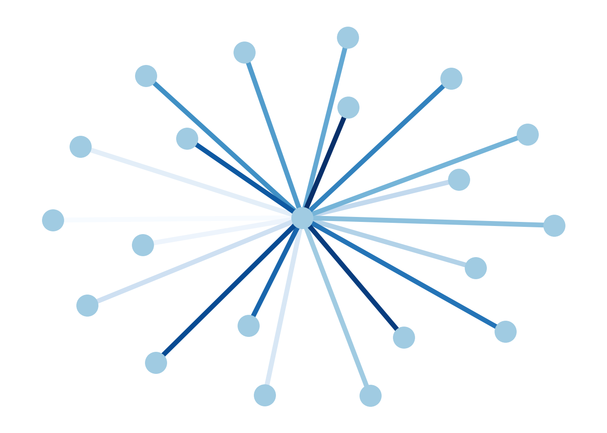

library(tidyverse)
library(gt)
library(reticulate)reticulate 소개
reticulate 패키지는 R에서 python을 사용하고 싶을 때 이용할 수 있는 패키지이다. vscode에서 quarto를 이용할 때, 가상환경을 적절하게 세팅하면 각 qmd 파일 별로 R, python을 적절하게 사용할 수 있지만 R, python을 한 qmd에서 동시에 사용할 수는 없다. 동시에 사용하고 싶을 경우 reticulate 패키지를 이용하면 된다.
R example
iris %>% head() %>% gt()| Sepal.Length | Sepal.Width | Petal.Length | Petal.Width | Species |
|---|---|---|---|---|
| 5.1 | 3.5 | 1.4 | 0.2 | setosa |
| 4.9 | 3.0 | 1.4 | 0.2 | setosa |
| 4.7 | 3.2 | 1.3 | 0.2 | setosa |
| 4.6 | 3.1 | 1.5 | 0.2 | setosa |
| 5.0 | 3.6 | 1.4 | 0.2 | setosa |
| 5.4 | 3.9 | 1.7 | 0.4 | setosa |
reticulate
reticulate를 이용할 때는 가상환경을 만들고, 해당 가상환경을 연결해서 사용하는 것이 바람직하다. 나는 pytorch-test 폴더에 가상환경 env를 만들고, reticulate 패키지와 연결할 가상환경의 path를 맞춰주었다. 이 작업을 안할 경우 error가 난다;;
Sys.setenv(RETICULATE_PYTHON="/Users/sangdon/pytorch-test/env/bin/python")
reticulate::use_condaenv(condaenv = 'env')python example
import pandas as pd
import numpy as np
import torch
import networkx as nx
import matplotlib.pyplot as plt
from torch_geometric.data import Data
import torch_geometric
from sklearn.datasets import load_irisiris = load_iris()
df = pd.DataFrame(iris.data, columns=iris.feature_names)
df.head() sepal length (cm) sepal width (cm) petal length (cm) petal width (cm)
0 5.1 3.5 1.4 0.2
1 4.9 3.0 1.4 0.2
2 4.7 3.2 1.3 0.2
3 4.6 3.1 1.5 0.2
4 5.0 3.6 1.4 0.2G = nx.star_graph(20)
pos = nx.spring_layout(G, seed=63) # Seed layout for reproducibility
colors = range(20)
options = {
"node_color": "#A0CBE2",
"edge_color": colors,
"width": 4,
"edge_cmap": plt.cm.Blues,
"with_labels": False,
}
nx.draw(G, pos, **options)
plt.show()
참고
https://rstudio.github.io/reticulate/articles/versions.html#providing-hints-1